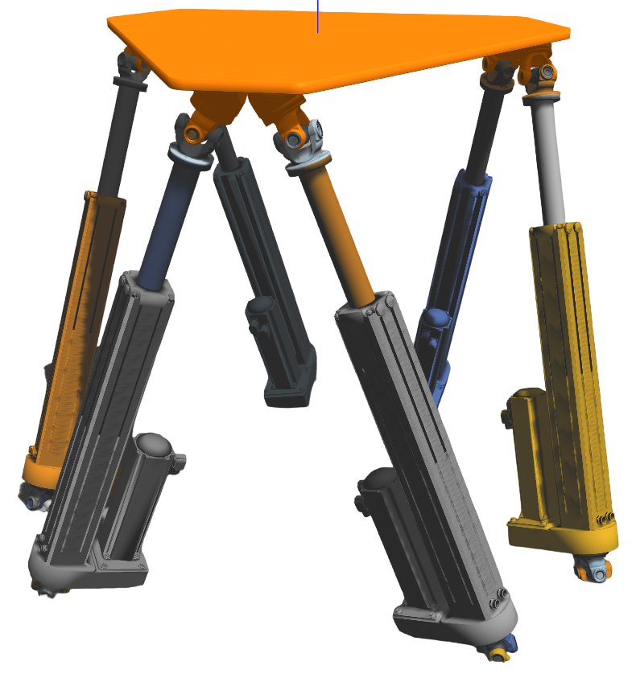

Project Details
This is a project carried out at the Research Institute of the Naval Academy as part of an assistant engineer internship. This was a 4 month internship (August-December 2022). The platform concerned is a 6-axis Stewart-platform type platform. In addition to these 6 axes, the hexapod has two plates, one fixed and one mobile. As part of this project, the first step was the modeling of this platform (see below)

In the rest of the project, it was necessary to sort and study the part files in order to be able to create
the assembly in the Gazebo/ROS software, an open source 3D simulation software.
Once this modeling done in the software, I had the opportunity to create the link controllers
as well as an interface to send rotation commands to the jacks. In this interface, the angle of rotation is entered according to
roll, pitch and yaw. These 3 rotation values will then be used in the cylinder length calculation
which will make it possible to deduce the length of each cylinder according to the values of rotations and translations transmitted through the interface.
It is possible to observe the final result of this project below:

For more information on the project: https://github.com/MaelysLupin/Stewart-platform